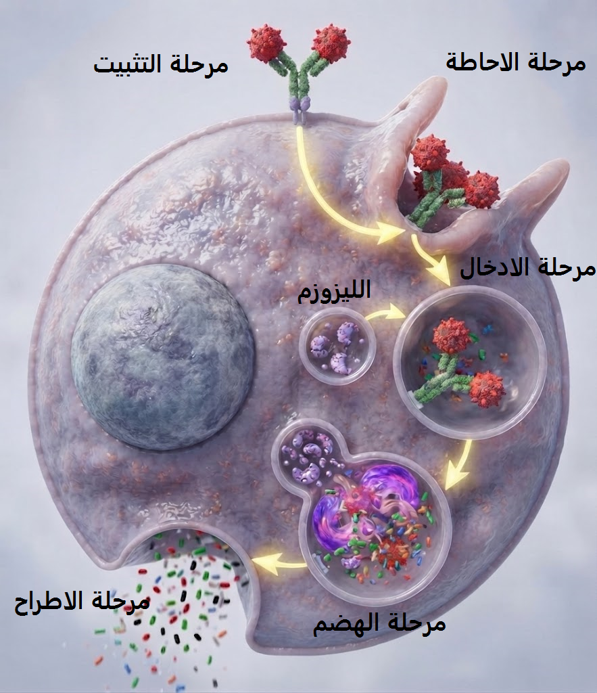
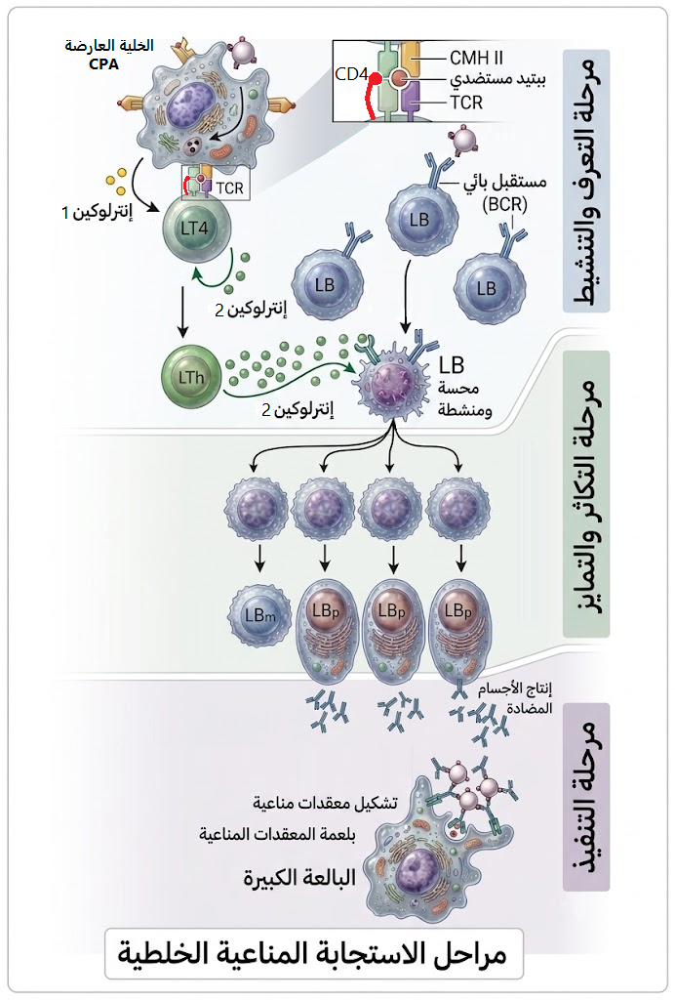

الوحدة 4: دور البروتينات في الدفاع عن الذات (المناعة)
[ مساحة إعلانية علوية ]
1 مفهوم اللاذات والقدرة المستضدية
أ. التمييز بين ببتيدات الذات واللاذات:
تستطيع الخلايا المناعية فحص خلايا العضوية عبر مستقبلاتها الغشائية النوعية؛ فإذا عرضت الخلية ببتيدات الذات المشفّرة وراثياً على جزيئات الـ CMH يتم التعرف عليها كـ ذات وتُحترم. أما إذا عرضت ببتيدات غريبة (مستضدية) أو معدّلة، فتُصنف كـ لاذات وتُستهدف بالإقصاء لحماية سلامة العضوية.
ب. شروط إثارة الرد المناعي النوعي:
تتحدد القدرة المستضدية للمادة الغريبة بمدى غرابيتها الوراثية، تعقد بنيتها الفراغية، ووزنها الجزيئي العالي الذي يتيح لها امتلاك محددات مستضدية نوعية.
المستضدات المعقدة تثير استجابة مناعية قوية، بينما الجزيئات البسيطة أو صغيرة الوزن الجزيئي لا تثير ردّاً مناعياً إلا إذا ارتبطت بـ بروتينات العضوية لتشكل معقداً يُتصرّف معه كعنصر غريب.
2 الغشاء الهيولي والبنية الجزيئية
أ. النموذج الفسيفسائي والطبقة الدهنية المضاعفة:
• الطبقة الفوسفوليبيدية: يتكون الغشاء الهيولي أساساً من طبقتين مضاعفتين من الفوسفوليبيدات؛ حيث تتجه رؤوسها المحبة للماء نحو الوسطين المائيين (الخارجي والداخلي/الهيولى)، بينما تتواجه أذيالها الكارهة للماء (الأحماض الدسمة) في المركز، مما يشكل حائلاً عازلاً يحافظ على استقرار الخلية.
• خاصية التنوع والفسيفساء: تتخلل هذه الطبقة مضاعفة الفوسفوليبيد بروتينات غشائية متباينة الأشكال، الأحجام، والأوضاع (بروتينات ضمنية/مدمجة تغترق الغشاء، وبروتينات سطحية خارجية وداخلية)، مما يعطي للغشاء الهيولي مظهراً فسيفسائياً غير متماثل.
ب. الميوعة الغشائية وتجربة التهجين الخلوي:
• تجربة التهجين الخلوي: أُجريت بدمج خلية إنسان مع خلية فأر باستعمال فيروس مدمج، ثم وُسمت البروتينات الغشائية للخليتين بأجسام مضادة فلورية نوعية ذات لونين مختلفين (فلورة حمراء لبروتينات الإنسان وخضراء لبروتينات الفأر).
• خاصية الميوعة: أظهرت الملاحظة المجهرية أنه بعد فترة من الاندماج (عند درجة حرارة 37°C)، توزع التفلور بشكل متجانس ومختلط على كامل غشاء الخلية الهجينة، مما أثبت أن البروتينات والجزيئات الغشائية ليست ساكنة بل في حركة ديناميكية مستمرة، وهي ما تُعرف بـ خاصية الميوعة (السيولة الغشائية).
ج. الغليكوبروتينات وبطاقة التعريف البيولوجية (مؤشرات الذات):
• الموقع والتكـوين: تتواجد السلاسل السكرية (الغلوسيدية) حصرياً على السطح الخارجي للغشاء الهيولي، حيث ترتبط بالبروتينات لتشكل جزيئات غليكوبروتينية (أو بالدسم لتشكل غليكوليبيدات).
• مؤشرات الذات (CMH): تُعتبر هذه الغليكوبروتينات المحددة وراثياً (خاصة جزيئات المعقد الرئيسي للتقبل النسيجي CMH) بمثابة بطاقة تعريف بيولوجية تمنح الخلية هويتها الخاصة، وتسمح للخلايا المناعية بالتعرف عليها كعنصر من الذات وحمايتها، بينما تتسبب في رفض الطعوم غير المتبادلة بين الأفراد غير المتماثلين وراثياً.
رسم تخطيطي يوضح بنية الغشاء الهيولي (نموذج الفسيفساء المائعة)

3 نظام معقد التوافق النسيجي (CMH)
أ. التحديد الوراثي والتعدد الأليلي (الصبغي 6):
• المؤشر الوراثي: تشرف على تشفير جزيئات الـ CMH مجموعة مورثات متقاربة جداً ومتموضعة على الذراع القصير للصبغي رقم 6 (المورثات A, B, C للصنف I والمورثات DP, DQ, DR للصنف II).
• السيادة المتبادلة والتعدد: تتميز هذه المورثات بـ تعدد أليلي هائل مع غياب السيادة بينها (تعبير متساوي للأليلات)، مما يجعل لكل فرد تركيبة سكرية بروتينية فريدة ومستحيلة التكرار إلا في حالة التوائم الحقيقية.
ب. بنية وتوزيع الصنفين (CMH I و CMH II):
• جزيئات CMH I: تتواجد على غشاء جميع الخلايا المنواة في الجسم؛ تتكون من سلسلة ثقيلة α وسلسلة خفيفة β2m، وتختص بعرض الببتيدات ذات المنشأ الداخلي (مثل البروتينات الفيروسية أو السرطانية).
• جزيئات CMH II: يقتصر وجودها على الخلايا العارضة (CPA) واللمفاويات LB؛ تتكون من سلسلتين α و β، وتختص بعرض الببتيدات ذات المنشأ الخارجي التي تم بلعمتها وتفكيكها جزئياً.
ج. آلية العرض والتعرف المزدوج:
• منصة العرض الغشائي: ترتبط الببتيدات المستضدية بالموقع المحدد لجزيئة الـ CMH داخل الحويصلات الهيولية، ثم تُعرض على السطح الخارجي للغشاء الهيولي للخلية.
• التعرف المزدوج: إذا كان الببتيد المعروض غريباً (لاذات)، يتم التعرف عليه بشكل نوعي ومزدوج بواسطة مستقبلات اللمفاويات التائية (TCR بوجود المؤشرات CD4 أو CD8)، مما يحفز انطلاق الرد المناعي النوعي.
رسم تخطيطي يوضح بنية جزيئات الـ CMH

4 مبدأ الرفض والقبول في الطعوم النسيجية
أ. شروط التوافق النسيجي وقبول الطعم:
• التوافق النسيجي المثالي: يتطلب قبول الطعم تماثلاً كلياً أو تقارباً كبيراً في جزيئات الـ CMH بين المعطي والمستقبل؛ ويكون القبول مضموناً بنسبة 100% في حالات الطعم الذاتي (من وإلى نفس الشخص) أو بين التوائم الحقيقية المتماثلة وراثياً.
• الطعوم المتجانسة والمثبطات: في حال نقل الطعم بين أفراد غير متماثلين وراثياً (طعم متجانس)، تتطلب العملية تقارباً نسيجياً كبيراً مع استخدام أدوية كابتة (مثبطة) للمناعة لتقليل شدة الرفض المناعي.
ب. الآلية الخلوية لرفض الطعوم غير المتوافقة:
• التعرف على اللاذات: تتعرف اللمفاويات التائية لمستقبل الطعم على جزيئات الـ CMH الغريبة المتواجدة على غشاء خلايا الطعم كعنصر ينتمي للـ لاذات.
• الاستجابة الخلوية وتدمير الطعم: تُثار استجابة مناعية ذات وساطة خلوية تتدخل فيها الخلايا التائية السامة (LTc)؛ حيث ترتبط بخلايا الطعم وتفرز جزيئات البيرفورين والإنزيمات الهاضمة محدثة صدمة حلولية تؤدي لتخريب خلايا الطعم وفشل عملية الزرع.
5 نظام الزمر الدموية ABO
أ. السلسلة السكرية الطلائعية والمنشأ الوراثي (الصبغي 19 و9):
• السلسلة السكرية الطلائعية: تتواجد على غشاء الكريات الدموية الحمراء سلسلة سكرية طلائعية (تتكون من 4 سكريات بسيطة)، وتُعتبر الركيزة الأساسية التي تُبنى عليها المستضدات الغشائية.
• مورثة المادة H (الصبغي 19): تشرف المورثة H المتموضعة على الصبغي 19 على تركيب إنزيم وظيفي يربط سكر الفوكوز (Fucose) بالسلسلة السكرية الطلائعية لتتحول إلى المادة H (المستضد H المكون من 5 سكريات).
• مورثة نظام ABO (الصبغي 9): تشرف المورثة المتموضعة على الصبغي 9 (بأليلاتها A, B, O) على تحديد نوع الإنزيم الذي يربط السكر السادس النوعي فوق المادة H.
• زمرة بومباي (hh): نمط ظاهري استثنائي يرجع لغياب الإنزيم H (أليلات متنحية hh على الصبغي 19)؛ فلا يربط الفوكوز، وتحافظ الكريات الحمراء على سلسلتها السكرية الطلائعية دون تحولها للمادة H، ويحتوي المصل على أجسام مضادة (مضاد-A، مضاد-B، ومضاد-H).
ب. التخصص الإنزيمي للزمر وطبيعة المستضدات الغشائية:
• الزمرة A: يشرف الأليل A على تركيب إنزيم وظيفي يربط سكر NAGA (N-أستيل غالاكتوز أمين) بالمادة H، ليتشكل المستضد A.
• الزمرة B: يشرف الأليل B على تركيب إنزيم وظيفي يربط سكر Gal (غالاكتوز) بالمادة H، ليتشكل المستضد B.
• الزمرة AB: يعبر الأليلان A و B معاً (سيادة متبادلة) عن تركيب كلا الإنزيمين الوظيفيين، فتتواجد مستضدات A ومستضدات B معاً فوق المادة H على غشاء الكرية الحمراء.
• الزمرة O: يشفر الأليل O لـ إنزيم غير وظيفي، فتتوقف السلسلة عند حد المادة H دون إضافة سكر آخر، وتكون المادة H هي المؤشر الغشائي المُميّز لهذه الزمرة.
رسم تخطيطي يوضح البنية الكيميائية لمحددات الزمر الدموية في نظام الـ ABO (الذات واللاذات)

6 نظام الريزوس (Rh) والبروتين D
أ. الطبيعة البروتينية للمستضد D والصبغي 1:
• المنشأ الوراثي (الصبغي 1): يعتمد نظام الريزوس على وجود أو غياب بروتين غشائي مدمج يسمى المستضد D، وتتحكم في تشفيره وتعبيره السطحي مورثة سائدة متموضعة على الصبغي رقم 1.
• النمط الظاهري (Rh+ / Rh-): وجود هذا المستضد البروتيني يمنح الفرد زمرة موجبة الريزوس (Rh+)، بينما غيابه يعني زمرة سالبة الريزوس (Rh-).
• القدرة المستضدية العالية: يمتلك المستضد D قدرة مستضدية عالية جداً لكونه بروتيناً خالصاً، ويُعتبر بالنسبة لعضوية الشخص سالب الريزوس عنصر غريباً تماماً (لاذات) يُحفز رد فعل مناعي قوي عند انتقاله إليها.
ب. التعارض المناعي بين الأم السلبية والجنين الموجب (فكرة تمرين):
• التماس الأول والتحسس (الحمل الأول): أثناء ولادة جنين موجب (Rh+) لأم سالبة (Rh-)، يتسرب جزء من دم الجنين للدورة الدموية للأم، فيتحسس جهازها المناعي ويُنتج أجساماً مضادة من نوع IgG ضد المستضد D مع تشكل ذاكرة مناعية.
• المخاطر المناعية (الحمل الثاني): في الحمل الثاني بجنين موجب (Rh+)، تعبر أجسام Anti-D المشيمة لتستهدف كريات دم الجنين الحمراء وتخربها، مما يسبب له فقر دم حاد وانحلالاً دمويين خطيرين.
• الوقاية الطبية: تُحقن الأم السلبية بـ مصل مضاد للـ D (Anti-D) فور الولادة الأولى (خلال 72 ساعة) لتدمير الكريات الحمراء المسربة من الجنين قبل أن يتحسس جهازها المناعي وتتكون لديه ذاكرة.
7 نشأة وتمايز اللمفاويات واكتساب الكفاءة المناعية (التسامح المناعي)
أ. نشأة ونضج اللمفاويات البائية (LB) والتسامح المناعي المركزي:
تنشأ اللمفاويات البائية (LB) وتكتسب كفاءتها المناعية في نقي العظام الأحمر:
• اكتساب الكفاءة: تركيب مستقبلات غشائية نوعية تتمثل في أجسام مضادة غشائية (BCR).
• التسامح المناعي المركزي: خضوع الخلايا لغربلة صارمة يتم خلالها إقصاء وتخريب النسائل التي تتعرف على ببتيدات الذات لحماية العضوية من الاستجابات الذاتية.
• الهجرة: انتقال الخلايا LB الناضجة والمتحملة للذات عبر الدم لتستقر في الأعضاء اللمفاوية المحيطية (العقد اللمفاوية والطحال).
ب. نضج وتمايز اللمفاويات التائية (LT) وآلية الانتقاء التيموسي:
تهاجر الخلايا الطلائعية التائية من نقي العظام نحو الغدة التيموسية لتكتسب كفاءتها المناعية بتركيب المستقبلات التائية (TCR) والمؤشرات الغشائية:
• التمايز والتخصص الوظيفي:
- الخلايا LT₄: تركيب المؤشر CD4 والتعرف المزدوج على الببتيد المستضدي المعروض على جزيئات CMH II.
- الخلايا LT₈: تركيب المؤشر CD8 والتعرف المزدوج على الببتيد المستضدي المعروض على جزيئات CMH I.
• مراحل الانتقاء التيموسي (احترام الذات):
1. الانتقاء الموجب: الاحتفاظ بالخلايا التي تتعرف مستقبلاتها TCR على جزيئات CMH الذات وإقصاء البقية.
2. الانتقاء السالب: إقصاء وتخريب النسائل التي تتعرف على ببتيدات الذات لضمان خروج خلايا كفؤة ومتحملة لأنسجة الجسم.
8 دور الخلايا العارضة (CPA)
أ. المعالجة الجزيئية وعرض الببتيدات المستضدية:
• البلعمة والتفكيك الجزئي: تقوم الخلايا العارضة للمستضد (CPA) ببلعمة المستضدات الخارجية وتفكيك بروتيناتها جزئياً داخل الحويصلات الهيولية بواسطة إنزيمات هاضمة للحصول على ببتيدات مستضدية (محددات المستضد).
• العرض الغشائي: ترتبط الببتيدات المستضدية بجزيئات الـ CMH II (أو CMH I)، وتهاجر الحويصلات لتندمج مع الغشاء الهيولي، مما يسمح بعرض معقد [CMH - ببتيد مستضدي] على السطح الخارجي للـ CPA.
ب. إفراز الإنترلوكين 1 (IL-1) والتنشيط الأولي:
• التعرف المزدوج والتماس: ترتبط الخلية العارضة باللمفاويات المنتخبة (LT4 أو LT8) عبر التعرف المزدوج بين مستقبلات TCR والمؤشرات (CD4/CD8) مع معقد [CMH - ببتيد مستضدي].
• تحفيز إظهار مستقبلات الإنترلوكين 2: تفرز الـ CPA وسيطاً كيميائياً هو الإنترلوكين 1 (IL-1)، والذي يعمل كمحفز أولي يحث اللمفاويات المنتخبة على تنشيط التعبير الجيني لتركيب وإظهار مستقبلات الإنترلوكين 2 على أغشيتها.
9 بنية ووظيفة الغدد اللمفاوية والأعضاء المحيطية (معلومة اضافية)
أ. البنية التشريحية للغدة اللمفاوية ومناطق التمركز:
• المنطقة القشرية (الخارجية): غنية بالخلايا اللمفاوية البائية (LB) المتجمعة على شكل جريبات لمفاوية.
• المنطقة شبه القشرية (المجاورة): تتمركز فيها أساساً الخلايا اللمفاوية التائية (LT4 و LT8).
• المنطقة اللبية (المركزية): تضم بالعات كبيرة وأوعية لمفاوية واردة وصادرة، وتختص بترشيح وتصفية اللمف من العناصر الغريبة.
ب. الغدة كمسرح للقاء المناعي والانتقاء النسيلي:
• ميدان اللقاء المناعي: تُشكل الأعضاء اللمفاوية المحيطية (كالعقد اللمفاوية والطحال) المقر الحيوي لالتقاء الخلايا المناعية الدوارة بالمستضدات الوافدة عبر اللمف أو الدم.
• الانتقاء النسيلي والتضخم: تختار محددات المستضد بدقة النسائل اللمفاوية النوعية التي تمتلك مستقبلات غشائية متكاملة معها بنيوياً، مما يحفز تكاثرها النشط ويؤدي إلى انتفاخ وتضخم العقدة اللمفاوية.
10 بنية الجسم المضاد (Ig)
أ. السلاسل الببتيدية والجسور ثنائية الكبريت:
يتكون الجسم المضاد (
Immunoglobulin) من بنية فراغية ذات
طبيعة بروتينية على شكل حرف
Y، وتتشكل من **أربع سلاسل ببتيدية** متناظرة:
سلسلتين ثقيلتين (H) و
سلسلتين خفيفتين (L). ترتبط هذه السلاسل بينها بواسطة
جسور ثنائية الكبريت (S-S) تكافؤية تضمن استقرار بنيتها الفراغية.
ب. المنطقة المتغيرة وموقعي تثبيت المستضد:
تمتلك نهايات السلاسل (الخفيفة والثقيلة) منطقة متغيرة تتميز بتسلسل محدد ومتغير من الأحماض الأمينية، وتشكل
موقعي تثبيت المستضد. يتكامل هذا الموقع فراغياً بشكل
نوعي مع
محدد المستضد (المولد)، مما يسمح بتشكل
المعقد المناعي (مستضد - جسم مضاد).
ج. المنطقة الثابتة (Fc) ودورها في البلعمية:
تمثل الجزء السلفي المشترك للسلاسل الثقيلة
المنطقة الثابتة (Fc)، وتكون متماثلة عند نفس الصنف من الأجسام المضادة. تحتوي هذه المنطقة على
موقع تثبيت خاص على
المستقبلات الغشائية للبالعات الكبيرة، مما يسهل عملية **البلعمية** وتثبيت المعقد المناعي.
رسم تخطيطي لبنية جزيئة الجسم المضاد (Ig)

11 آلية إبطال مفعول المستضد
أ. تشكّل المعقد المناعي وإبطال مفعول المستضد:
يرتبط الجسم المضاد نوعياً بمحدد المستضد عن طريق مواقع التثبيت المتغيرة مشكلاً المعقد المناعي (مستضد - جسم مضاد). يؤدي هذا الارتباط إلى إبطال مفعول المستضد ومنعه من الانتشار والتكاثر، وكذا منعه من التثبيت والاختراق للخلايا المستهدفة.
ب. ظاهرتان لإبطال المفعول (الارتصاص والترسيب):
يظهر إبطال مفعول المستضد وفق ظاهرتين حسب طبيعته:
• الارتصاص (Agglutination): يحدث في حالة المستضدات الخلوية (كالبكتيريا)، حيث يربط الجسم المضاد بين أكثر من مستضد مشكلاً تكتلات تمنع انتشارها.
• الترسيب (Precipitation): يحدث في حالة المستضدات المنحلة (كالسموم Toxines)، حيث يحولها الجسم المضاد إلى معقدات غير منحلة مترسبة.
(تُسهل كلا الظاهرتين عملية بلعمة وتصفية المعقدات المناعية بواسطة البالعات الكبيرة).
12 مراحل وعناصر عملية البلعمة والتخلص من المعقدات المناعية
أ. مرحلة التثبيت والالتصاق:
• التكامل الفراغي: تقترب البالعة الكبيرة من المعقد المناعي وتتثبت عليه بفضل التكامل الفراغي بين مستقبلاتها الغشائية النوعية والمنطقة الثابتة (Fc) للجسم المضاد.
ب. مرحلة الإحاطة والابتلاع:
• تشكل الأرجل الكاذبة: يمتد الغشاء الهيولي للبالعة الكبيرة ليرسل امتدادات سيتوبلازمية (أرجلاً كاذبة) تحيط بالمعقد المناعي من جميع الجهات.
• الحويصل البالع: تلتحم الأرجل الكاذبة حول المعقد لتنغلق عليه وينفصل حويصل داخل الهيولى يسمى الحويصل البالع (فجوة بلعمية).
ج. مرحلة الهضم الإنزيمي:
• اندماج الليزوزومات: تتجه الليزوزومات (Lysosomes) المحملة بالإنزيمات الهاضمة نحو الحويصل البالع وتندمج معه لتشكل حويصلاً هاضماً.
• التفكيك الكيميائي: تُفرز الإنزيمات الهاضمة داخل الحويصل لتفكك مكونات المعقد المناعي (المستضد والجسم المضاد) إلى جزيئات بسيطة غير ضارة.
د. مرحلة الإطراح الخلوي:
• طرح بقايا الهضم: يتجه الحويصل الهاضم المحمل بنواتج الهضم غير المفيدة نحو الغشاء الهيولي للبالعة الكبيرة، ويندمج معه لطرح هذه البقايا خارج الخلية بظاهرة الإطراح الخلوي وتطهير الوسط الداخلي للعضوية.
عملية البلعمة

13 مراحل وآلية الاستجابة المناعية الخلطية (LB)
أ. مرحلة الانتقاء النسيلي والتحسيس:
• الانتقاء النسيلي: تتثبت الخلية اللمفاوية البائية LB النوعية مباشرة على محدّد المستضد المنحل عبر مستقبلها الغشائي BCR بفضل التكامل الفراغي، فيتم انتقاء نسيلة نوعية دون الحاجة لخلية عارضة.
• التحسيس: يُحفّز هذا الارتباط، برفقة الإنترلوكين 1 (IL-1) المفرز من طرف الخلايا العارضة (CPA)، الخلية LB لتصبح محسسة وتشرع فوراً في تركيب والتعبير عن مستقبلات غشائية نوعية للـ IL-2 على غشائها.
ب. مرحلة التكاثر (التوسع النسيلي):
• التنشيط والتكـاثر: يرتبط الإنترلوكين 2 (IL-2) المفرز من الخلايا التائية المساعدة (LTh) بـ المستقبلات الغشائية النوعية للـ IL-2 المتواجدة على غشاء الـ LB المحسسة.
• الانقسام الخيطي: تحث هذه الإشارة الكيميائية الخلية على الانقسام الخيطي المتساوي والسريع، لتتشكل لمة (نسيلة) واسعة تحمل نفس المستقبلات الغشائية والنوعية الصارمة ضد المستضد.
ج. مرحلة التمايز الوظيفي:
تتجه خلايا النسيلة الناتجة في مسارين وظيفيين أساسيين:
1. الخلايا البلازمية (Plasmocytes): تتمايز أغلبية الخلايا بتأثير استمرار الـ IL-2 إلى خلايا حجمها كبير، تتميز بشبكة هيولية داخلية محببة وجهاز غولجي متطور، ومجهزة لتركيب وإفراز الأجسام المضادة بغزارة.
2. خلايا الذاكرة (LBm): تتمايز البقية إلى خلايا ذات ذاكرة مناعية طويلة العمر، تحفظ التماس وتضمن استجابة سريعة وفعالة عند التعرض للمستضد نفسه مستقبلاً.
د. مرحلة التنفيذ (إبطال المفعول والبلعمة):
• إفراز الأجسام المضادة: تفرز الخلايا البلازمية أجساماً مضادة حرة ونوعية في السوائل الحيوية (الدم واللمف) لترتبط بالمستضدات وتشكل معقدات مناعية تعدّل سميتها وتمنع انتشارها.
• التخلص النهائي بالبلعمة: تتثبت البالعات الكبيرة عبر مستقبلاتها الغشائية النوعية على القطعة الثابتة للأجسام المضادة ضمن المعقد المناعي، لتتم عملية البلعمة والهضم النهائي وتطهير العضوية.
رسم تخطيطي لمراحل عملية الاستجابة المناعية الخلطية (LB)

14 آلية قضاء الخلية التائية السامة (LTc) على الخلية المصابة
أ. التعرف المزدوج والتثبيت النوعي (مرحلة التماس):
• تتثبت الخلية السامة المنفذة LTc نوعياً على غشاء الخلية المصابة (خلية مستهدفة تعبر عن بروتينات مستضدية) عن طريق تعرف مزدوج.
• يتم هذا التعرف بين المستقبل الغشائي TCR والمؤشر السطحي CD8 للخلية السامة من جهة، ومعقد [CMH I - ببتيد الخلية المصابة] المعروض على غشاء الخلية المصابة من جهة أخرى.
ب. إفراز جزيئات التخريب (السمية الخلوية):
• يؤدي التثبيت والتعرف المزدوج إلى تنشيط الخلية LTc، فتتجه حويصلاتها السامة نحو منطقة التماس (الفجوة الالتحامية) وتفرز محتواها بظاهرة الإطراح الخلوي:
• البرفورين: جزيئات بروتينية تتبلمر وتندمج ضمن الغشاء الهيولي للخلية المصابة بوجود شاريدات الكالسيوم (Ca2+)، مكوّنة قنوات وثقوب غشائية.
• الغرونزيم: إنزيم محلل ينفذ عبر قنوات البرفورين إلى داخل هيولى الخلية المصابة، ليفعل إنزيمات الـ Caspases التي تفكك المادة الوراثية (ADN) وتدخل الخلية المصابة في موت خلوي مبرمج (Apoptosis).
ج. الصدمة الحلولية والتنظيف بالبلعمة:
• يتسبب وجود الثقوب الغشائية الكثيرة في تدفق هائل وغير مراقب للماء والشوارد إلى داخل الخلية المصابة.
• ينتج عن هذا التدفق المائي حدوث صدمة حلولية تؤدي إلى انتفاخ وانحلال الخلية المصابة وتخريبها تماماً.
• تتدخل البالعات الكبيرة في الأخير لبلعمة وهضم الأنقاض والبقايا الخلوية لتنظيف النسيج.
15 مراحل الاستجابة المناعية الخلوية
أ. مرحلة التعرف والتحسيس (الانتقاء النسيلي):
• التعرف المزدوج: ترتبط اللمفاوية LT8 النوعية عن طريق مستقبلها الغشائي TCR والمؤشر CD8 بمعقد [CMH I - ببتيد الخلية المصابة] المعروض على غشاء الخلية العارضة (CPA) أو الخلية المصابة.
• التحسيس: ينتج عن هذا التعرف تحسيس الخلية LT8 المنتقاة نسيلياً، فتبدأ فوراً في تركيب والتعبير عن مستقبلات الإنترلوكين 2 (IL-2R) على غشائها الهيولي.
ب. مرحلة التكاثر والتمايز (التنشيط والتوسع النسيلي):
• التكاثر (الانقسام الخيطي): ترتبط مادة الإنترلوكين 2 (IL-2) المفرزة من طرف الخلايا المساعدة (LTh) بمستقبلاتها (IL-2R) على غشاء الـ LT8 المحسسة، فتتنشط وتدخل في سلسلة انقسامات متتالية لتشكل لمة (نسيلة) واسعة من الخلايا التائية المماثلة.
• التمايز الوظيفي: تتجه خلايا النسيلة في مسارين:
1. تتمايز أغلبية الخلايا إلى خلايا تائية سامة منفذة (LTc) مجهزة بحويصلات البرفورين والغرونزيم.
2. تتمايز البقية إلى خلايا ذاكرة مناعية (LT8m) طويلة العمر تحفظ التماس لاستجابة سريعة مستقبلاً.
ج. مرحلة التنفيذ (القضاء على الخلية المصابة):
• التثبيت والتخريب: تنتقل الخلايا السامة LTc إلى موقع الإصابة وتتثبت بـ تعرف مزدوج على الخلية المصابة، ثم تفرز محتوى حويصلاتها السامة في الفجوة الالتحامية.
• الموت الخلوي والصدمة الحلولية: يفتح البرفورين ثقوباً غشائية بوجود (Ca2+)، وينفذ الغرونزيم ليفعل إنزيمات الـ Caspases مسبباً موت خلوي مبرمج (Apoptosis) وتفكيك الـ ADN، متبوعاً بـ صدمة حلولية وتدخل البالعات لتنظيف البقايا.
16 التعاون المناعي ودور الإنترلوكين 2 (IL-2)
أ. مرحلة الانتقاء النسيلي وتحسيس اللمفاويات LT4:
• عرض المستضد والتعرف المزدوج: تعرض الخلية العارضة (CPA) معقد [CMH II - ببتيد مستضدي] على غشائها، لترتبط به الخلية LT4 النوعية عن طريق مستقبلها الغشائي TCR والمؤشر CD4 بـ تعرف مزدوج.
• التحسيس بالـ IL-1: تفرز الخلية العارضة (CPA) مادة الإنترلوكين 1 (IL-1) لتنشيط الخلية LT4 المنتقاة، مما يحثها على تركيب والتعبير عن مستقبلات غشائية نوعية للـ IL-2 على غشائها الهيولي.
ب. مرحلة التنشيط الذاتي للـ LT4 والتمايز إلى LTh:
• التنشيط الذاتي (Autostimulation): تفرز الخلية LT4 المحسسة كمية قليلة من الإنترلوكين 2 (IL-2) لتثبيتها على مستقبلاتها الغشائية النوعية للـ IL-2 الموجودة على غشائها هي ذاتها.
• التكاثر والتمايز: يحفز هذا الارتباط الخلية LT4 على الانقسام الخيطي التكاثري ثم التمايز إلى خلايا تائية مساعدة (LTh)، وهي خلايا محفزة ومفرزة بغزارة لمادة الـ IL-2 في الوسط.
ج. محورية الـ LTh في تحفيز المناعتين الخلطية والخلوية:
• تحفيز المناعة الخلطية (الخلايا LB): يرتبط الـ IL-2 المفرز من طرف LTh بـ المستقبلات الغشائية النوعية للـ IL-2 والمتواجدة على غشاء الخلايا LB المنتقاة والمحسسة مسبقاً، فيحفزها على التكاثر والتمايز إلى خلايا بلازمية مفرزة للأجسام المضادة وخلايا ذاكرة (LBm).
• تحفيز المناعة الخلوية (الخلايا LT8): يرتبط الـ IL-2 المفرز من طرف LTh بـ المستقبلات الغشائية النوعية للـ IL-2 والمتواجدة على غشاء الخلايا LT8 المنتقاة والمحسسة مسبقاً، فيحفزها على التكاثر والتمايز إلى خلايا تائية سامة (LTc) وخلايا ذاكرة (LT8m).
د. مرحلة التنفيذ والتخلص النهائي بفضل البالعات الكبيرة:
• التنفيذ الخلطي: ترتبط الأجسام المضادة المفرزة نوعياً بالمستضدات لتشكل معقدات مناعية تعدل سميتها وتثبط حركة المستضد، ثم تتثبت البالعات الكبيرة عبر مستقبلاتها النوعية للقطعة الثابتة للجسيم المضاد لبلعمة المعقد المناعي وهضمه.
• التنفيذ الخلوي: تقضي الخلايا السامة LTc على الخلايا المصابة بإفراز البرفورين والغرونزيم وحدوث الصدمة الحلولية، فتتدخل البالعات الكبيرة لبلعمة وهضم البقايا والأنقاض الخلوية لتنظيف النسيج.
• خلاصة التعاون المناعي: تُعتبر الخلايا LTh والـ IL-2 المحرك الأساسي لتضخم الرد المناعي، بينما تشكل البالعات الكبيرة الحلقة النهائية الضرورية للتخلص التام من المستضد وآثاره.
17 الاستجابة المناعية الأولية والثانوية
أ. خصائص الاستجابة المناعية الأولية:
• التماس الأول ومرحلة الكمون: تحدث عند التماس الأول مع المستضد، وتتميز بوجود مرحلة كمون (زمن كامن) طويلة تحتاجها الخلايا المناعية للتعرف، الانتقاء النسيلي، التكاثر والتمايز.
• الشدة والمدة: تكون الاستجابة بطيئة وضعيفة، حيث يُنتَج فيها كميات قليلة نسبياً من الأجسام المضادة وتتناقص سريعاً في الوسط الداخلي (يسود فيها النوع IgM).
ب. الاستجابة المناعية الثانوية والذاكرة المناعية:
• التماس الثاني والسرعة: تنطلق فور حدوث تماس ثانٍ أو متكرر مع نفس المستضد، وتتميز بالسرعة الفائقة لغياب شبه تام لمرحلة الكمون.
• تدخل خلايا الذاكرة: تعود هذه السرعة والشدة للتدخل الفوري لخلايا الذاكرة المناعية (LBm و LTm) المتشكلة أثناء التماس الأول، والتي تمتاز بعددها الكبير وقدرتها السريعة على التكاثر والتمايز إلى خلايا منفذة.
• الفعالية والشدة: ينتج عنها تدفق هائل ومكثف للأجسام المضادة (خاصة النوع IgG) يدوم لفترات طويلة، مما يضمن إقصاء المستضد بسرعة قبل ظهور الأعراض المرضية.
18 التلقيح والاستمصال (المصل واللقاح)
أ. التلقيح وبناء الحصانة النشطة طويلة المدى:
• مبدأ التلقيح (فعل وقائي): يعتمد على إدخال مستضدات وهنة، ميتة، أو سموم غير فعالة (أناتكسين Anatoxine) غير ممرضة، بهدف تحفيز الجهاز المناعي آمنياً.
• تشكيل الذاكرة والمناعة النشطة: يُحث اللقاح العضوية على إحداث استجابة مناعية أولية تُكلل بتشكيل خلايا ذاكرة مناعية نوعية (LBm و LTm) تدوم لسنوات، مما يمنح الجسم حصانة نشطة وطويلة المدى للتدخل السريع عند التماس مع المستضد الحقيقي.
ب. الاستمصال للعلاج الفوري المؤقت بنقل الأجسام المضادة:
• مبدأ الاستمصال (فعل علاجي): يتمثل في حقن مصل يحتوي على أجسام مضادة نوعية جاهزة ومكثفة مستخلصة من كائنات ممنعة سابقاً.
• حماية فورية بدون ذاكرة: يوفر حماية مناعية فورية وسريعة جداً في الحالات الطارئة والإستعجالية (كلدغات العقارب أو الإصابة بالكزاز)، لكن مفعوله مؤقت يزول بتفكك الأجسام المضادة المحقونة، ولا يترك أي ذاكرة مناعية.
19 بنية فيروس نقص المناعة البشري (HIV) والتخصص الخلوي
أ. البنية التشريحية للفيروس (الأغلفة والمحفظة):
يتكون فيروس HIV من بنية جزيئية منظمة في طبقات متتالية:
• الغلاف الخارجي: غشاء طبيعته ليپيدية مضاعفة (من أصل الخلية المستضيفة) مرصّع ببروتينات سكرية: gp120 (بارز للخارج) وgp41 (عابر للغشاء).
• المحفظة الخارجية (البروتين البيني p17): طبقة بروتينية تبطن الغلاف الخارجي من الداخل وتدعم ثبات الهيكل الفيروسي.
• المحفظة الداخلية (الكبسيدة p24): محفظة بروتينية مركزية مخروطية الشكل تحمي المحتوى الداخلي للفيروس.
ب. المحتوى الداخلي والإنزيمات النوعية:
تحتوي المحفظة الداخلية المركزية على:
• جزيئتين متماثلتين من الـ ARN الفيروسي (المادة الوراثية).
• إنزيمات فيروسية نوعية: أبرزها إنزيم النسخ العكسي (لتحويل الـ ARN إلى ADN)، وإنزيم الدمج (لإدماج الـ ADN الفيروسي في صبغيات الخلية)، وإنزيم البروتياز.
ج. التخصص الخلوي والدخول للخلية المستهدفة:
يحدث الاستهداف النوعي بفضل التكامل الفراغي بين البروتين السكري gp120 والمؤشر الغشائي CD4 المتواجد على أسطح الخلايا التائية المساعدة (LT₄) والبالعات الكبيرة، مما يسمح باندماج الغلاف الفيروسي مع غشاء الخلية وحقن المادة الوراثية والإنزيمات داخل الهيولى.
20 دورة حياة HIV وآلية استنزاف الدفاعات المناعية
أ. مراحل دورة حياة فيروس الـ HIV داخل الخلية المستهدفة (LT₄):
تمر دورة تكاثر الفيروس داخل الخلية التائية المساعدة بست مراحل متسلسلة:
1. التثبيت والالتصاق: يحدث تكامل فراغي نوعي بين البروتين السكري gp120 للفيروس والمؤشر الغشائي CD4 للخلية LT₄ (بالإضافة إلى المستقبل المصاحب CCR5).
2. الاندماج والحقن: يندمج الغشاء الفيروسي مع غشاء الخلية LT₄ بتدخل gp41، وتُحقن الكبسيدة التي تحرر محتواها (ARN والإنزيمات) داخل الهيولى.
3. النسخ العكسي: يقوم إنزيم النسخ العكسي بتحويل الـ ARN الفيروسي إلى سلسلة مضاعفة من الـ ADN الفيروسي.
4. الدمج الجيني: ينفذ الـ ADN الفيروسي إلى النواة ويدمج ضمن صبغيات الخلية بواسطة إنزيم الدمج (Integrase).
5. الاستنساخ والترجمة: يُستنسخ الـ ADN الفيروسي المدمج إلى ARNm فيروسي، لينتقل للهيولى ويُترجم عبر عضيات الخلية إلى بروتينات فيروسية.
6. التجميع والتبرعم والنضج: تتجمع المكونات الفيروسية عند الغشاء الهيولي وتتحرر الفيروسات الجديدة عن طريق التبرعم، لتكتمل عملية نضجها بتقطيع البروتينات بواسطة إنزيم البروتياز.
ب. آلية استنزاف الخلايا LT₄ وانهيار الجهاز المناعي:
يتسبب التكاثر والتبرعم الفيروسي المكثف في تدمير الجهاز المناعي وفق الخطوات التالية:
• تخريب وتناقص خلايا LT₄: تؤدي عملية التبرعم الكثيف إلى تمزق غشاء الخلية المصابة وموتها، أو استهدافها وتخريبها بواسطة الخلايا التائية السامة (LTc).
• توقف التنسيق المناعي: الانخفاض الحاد في تعداد خلايا LT₄ يؤدي إلى غياب إفراز الإنترلوكين 2 (IL-2)، وهو المبلغ الجزيئي الأساسي لتحفيز وتمايز الخلايا المناعية.
• مرحلة العجز المناعي المكتسب (السيدا): يتوقف تمايز الخلايا البائية (LB) والتائية السمية (LT8)، مما يسبب تحبيط المسلكين الخلطي والخلوي معاً، وتصبح العضوية عرضة لـ الأمراض الانتهازية.
21 التطور السريري لمرض السيدا (AIDS)
أ. المراحل السريرية للعدوى بفيروس الـ HIV:
يتطور المرض عبر ثلاث مراحل رئيسية تظهر من خلال المتابعة الطبية (تحليل الشحنة الفيروسية وتعداد LT₄ والأجسام المضادة):
1. مرحلة الإصابة الأولية (Primo-infection):
تستمر لعدة أسابيع، وتتميز بـ تكاثر فيروسي سريع ورائع (ارتفاع الشحنة الفيروسية) يرافقه انخفاض مؤقت في تعداد LT₄. يستجيب الجهاز المناعي بإنتاج أجسام مضادة وتطوير خلايا LTc، فيصبح الشخص موجب المصل (Séropositif)، مما يؤدي إلى تراجع الشحنة الفيروسية.
2. المرحلة بدون أعراض / الكمون المناعي (Phase asymptomatique):
تمتد لعدة سنوات (من 5 إلى 10 سنوات)، يكون خلالها الشخص موجب المصل وتكون الشحنة الفيروسية منخفضة بفضل المراقبة المناعية (LTc والأجسام المضادة). تتميز هذه المرحلة بـ الانخفاض التدريجي والمستمر في تعداد الخلايا LT₄.
3. مرحلة السيدا المعلن / العجز المناعي (SIDA déclaré):
تظهر عندما ينخفض تعداد الخلايا LT₄ إلى أقل من 200 خلية/ملم³ من الدم. يتوقف التنسيق المناعي لغياب IL-2، فتنهار الاستجابتان الخلطية والخلوية، وتستغل الأمراض الانتهازية (مثل السل وسرطان كابوزي) هذا العجز المناعي الشديد وتؤدي إلى الوفاة.
ب. مفهوم مصل موجب (Séropositivité):
يُعتبر الفرد موجب المصل تجاه فيروس HIV عند وجود أجسام مضادة نوعية ضد بروتينات الفيروس (مثل anti-gp120) في مصله، وهو دليل على دخول الفيروس للعضوية وتحفيز استجابة مناعية ضده.
22 طرق انتقال HIV والوقاية والعلاج
أ. طرق انتقال الفيروس عبر السوائل البيولوجية:
ينتقل فيروس HIV عبر الدم، الإفرازات الجنسية، وحليب الأم عن طريق:
• العلاقات الجنسية غير المحمية مع شخص مصاب.
• استعمال الأدوات الحادة والمحاقن الملوثة وغير المعقمة.
• من الأم المصابة لجنينها أو طفلها (عبر المشيمة، الولادة، أو الرضاعة الطبيعية).
ب. استراتيجيات العلاج والوقاية المتاحة:
• العلاج الدوائي المضاد للفيروسات (ART / Trithérapie): دمج أدوية تثبط إنزيمات الفيروس (النسخ العكسي، الدمج، والبروتياز) لـ كبح التكاثر الفيروسي وخفض الشحنة الفيروسية دون القضاء التام عليه (هذا يؤخر التطور نحو مراحل المرض المتقدمة ومرحلة السيدا المعلن).
• البروتوكولات الوقائية (PrEP / PEP): تناول أدوية مضادة قبل أو فور التعرض الخطر لمنع تثبيت الفيروس في الخلايا.
• الوقاية السلوكية والطبية: مراقبة الدم المنقول، استخدام أدوات حادة ذات استعمال واحد (À usage unique)، والابتعاد عن السلوكيات الخاطئة.
[ مساحة إعلانية سفلية ]